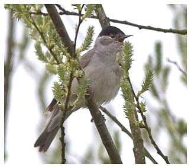

Blackcap
A regular summer visitor that breeds here.

Blackcap - Rosemary Ottery
03/05/64 - Maximum count of 12 birds. Record count to date
14/04/95 - 2 singing males
05/06/98 - 5 singing males
30/05/99 - 6 singing males as well as a pair feeding young
19/04/04 - 2 singing males (just 1 singing male recorded each year from 2000-2003)
06/04/05 - 4 birds
23/04/06 - 4 birds
06/05/07 - 6 birds
24/05/08 - 3 singing males
03/04/09 - 2 singing then 2 throughout April, 1 or 2 in May, max 3 on 04/06/09
01/04/10 - 1 bird then seen throughout April May and June with 2 pairs on 28/04 and 3 singing on 03/06
31/03/11 - max 2 males singing through April May and June
26/03/12 - 1 singing with 2 on 29/03. Up to 5 birds in April (4 singing) and 2 singing regularly through May, June and the begining of July. Juvenile bird seen on 20/07
23/03/13 - 1 early male arrived alongside an unprecedented fall of 80+ chiffchaffs. Otherwise up to 4 birds, one with nesting material on 08/05. Last bird seen 21/08
24/03/14 - 1 singing and another on 31/03. Up to 5 birds singing in April and 2 singing through May. Singing heard through June and July with a family party on 06/07
01/04/15 - 1 singing, then 1 on 15/04 and 17/04. upt o 3+ heard during May and song continued throughout June, last heard 01/07
30/03/16 - 2 singing and a pair seen on 09/04. Several singing throughout April and May with max of 6 birds recorded in both those months. On 02/06 a female was seen carrying food and several birds were singing that day. The last song was heard on 11/07
31/03/17 - 1 singing. Up to 3 singing during April and May with a young bird being seen on 31/05. Song heard through June and first half of July with max c.10 singing on 24/06
06/04/18 - 1 singing. Up to 4 singing birds from April until July apart from 6+ singing 06/04
25/03/19 - 1 singing. Up to 5 singing in April and May with 2 still singing on 24/06
26/03/20 - 2 singing. Up to 3 in the spring and singing all around reported on 15/06. Last heard on 10/07
04/04/21 - 1 singing. Up to 3 singing in April. 5 singing on 27/05 and 6 singing on 12/06. Last 2 heard on 23/06
10/04/22 - 2 singing. Up to 2 singing, heard in May and June as well as April
03/04/23 - 2 singing. Max 4 singing in April and May. Last heard on 01/07
26/03/24 - 1 singing. Max 4 singing in May. Last heard on 18/07
02/04/25 - 1 singing. Max 8+ singing on 22/05. Up to 4 singing in April. Call reported by Merlin app on 10/12, but not confirmed